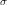
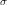

理论
在相机采集到的图像中，往往会存在一定的噪声。这种噪声一般来说在空间域是互不相关的，并且是一种加性噪声。对于一幅相机采集到的图像，可以表示为无噪声图像和加性噪声的组成，也即：
 |
(1) |
其中：为采集图像， 为无噪声图像，为噪声。
为无噪声图像，为噪声。
去噪的过程就是从已知的来近似得到的过程。
对于同一个场景拍摄的多张图像来说，是相同的，而 是随机的且相互之间不相关，相同场景的k幅图像图像的均值可以表示如下
是随机的且相互之间不相关，相同场景的k幅图像图像的均值可以表示如下
![\bar{g}(x,y)=\frac{1}{K}\sum_{i=1}^K[f_{i}(x,y)+\eta_{i}(x,y)]=f(x,y)+\frac{1}{K}\sum_{i=1}^K\eta_{i}(x,y)](f7.svg) |
(2) |
由于噪点随机且不相关，可得其平均图像的期望
 |
(3) |
平均图像的方差
 |
(4) |
即
 |
(5) |
从式(3)中我们可以发现，同场景的多幅图像的均值的期望是无噪点图像，但是会存在一些扰动，这些扰动的标准差(3)就决定了噪声的强度。我们对图像去噪的本质就是减少在空间域上的标准差。从式(5)中我们不难发现，通过增大K值，即增加平均图像的数量，即可减少噪声。
但同时我们可以发现： ，，随着K值的增大，的变化越来越小，用平均法去噪时，单单通过提高图像数量的作用是很小的。
，，随着K值的增大，的变化越来越小，用平均法去噪时，单单通过提高图像数量的作用是很小的。
实验
目的
- 验证同场景下多图像平均可以进行去噪。
- 随着图像数量的增大，图像噪点变化越来越小。
数据集
同一场景的179幅照片，用短时间采集完成。
以下是其中的一幅图片

其局部细节：
可以发现图像上的噪点是比较多的。
程序设计
程序的处理过程为：
程序源码：
matlab
1
2
3
4
5
6
7
8
9
10
11
12
13
14
15
16
17
18
|
% get image file names
DIR = 'imgs';
imgFiles = dir([DIR , '/*.jpg']);
[N, C]= size(imgFiles);
% get the image size
img = im2double(imread([DIR , '/', imgFiles(1).name]));
figure(1);
imshow(img);
img = img / N;
% calculate the average
for m = 2:N
img = img + im2double(imread([DIR , '/', imgFiles(m).name])) / N;
end
figure(2);
imshow(img);
|
C++(OpenCV2.4)
1
2
3
4
5
6
7
8
9
10
11
12
13
14
15
16
17
18
19
20
21
22
23
24
25
26
27
28
29
30
31
32
33
34
35
36
37
38
39
40
41
42
43
|
#include <opencv2/core/core.hpp>
#include <opencv2/imgproc/imgproc.hpp>
#include <opencv2/highgui/highgui.hpp>
#include <sstream>
#include <exception>
#include <iostream>
void denoise()
{
const int N = 179;
cv::Mat avrg_img;
for (int i = 0; i < N; i++){
std::ostringstream oss;
oss << "imgs/img (" << i+1 << ").jpg";
cv::Mat image = cv::imread(oss.str());
// convert to double
image.convertTo(image, CV_32F, 1.0 / 255.0);
if (i == 0){
cv::namedWindow("noisy image");
cv::imshow("noisy image", image);
avrg_img = image / N;
}
else
avrg_img += image / N;
}
cv::namedWindow("denoised image");
cv::imshow("denoised image", avrg_img);
avrg_img.convertTo(avrg_img, CV_8UC3, 255.0);
cv::imwrite("denoised.jpg", avrg_img);
}
int main()
{
try{
denoise();
}
catch (std::exception &e){
std::cerr << e.what() << std::endl;
}
cv::waitKey();
return 0;
}
|
测试
对179张图片进行测试，结果如下：
对照原图：
可以看出，噪点明显减少了，从而验证了多图像平均法去噪的可行性。
改变平均的图片数量，K取{2,3 … 10}，可以得到一系列图像，如以下gif所示：

可以看出，从原图到K=2，噪点减少显著，而从K=9到K=10，噪点变化较少，验证了之前的数学模型。
参考
[1] 冈萨雷斯.数字图像处理[M]. 阮秋琦译. 北京：电子工业出版社. 2011.6